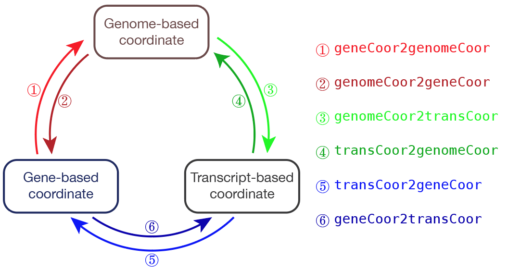

Genome Annotation Paser (GAP) is a tool for parsing Gencode/Ensembl GTF and NCBI GFF3 genome annotation files.
Python 2.7
pysam: https://pypi.org/project/pysam/
Add these lines to your ~/.bash_profile, [GAP] is the absolute path of GAP.
export PYTHONPATH=[GAP]:$PYTHONPATH
export PATH=[GAP]:$PATHGencode GTF/Genome: https://www.gencodegenes.org
Enesembl GTF/Genome: https://ensembl.org/info/data/ftp/index.html
NCBI GFF3/Genome: ftp://ftp.ncbi.nlm.nih.gov/genomes
parseGTF.py -g chicken.gtf -o chicken -s ensembl --genome chicken_ensembl.faThe genome file --genome chicken_ensembl.fa is optional.
It will produce three files:
chicken.genomeCoor.bed – A simple version of the genome-based annotation filechicken.transCoor.bed – A simple version of the transcript-based annotation filechicken_transcriptome.fa – Transcriptome fileimport GAP
chicken_parser = GAP.init("chicken.genomeCoor.bed", "chicken_transcriptome.fa")Another way is to read the GTF file directly.
chicken_parser = GAP.initGTF("chicken.gtf", genomeFile="chicken_ensembl.fa", source='Ensembl')mRNAs = chicken_parser.getmRNATransList(); print len(mRNAs)
# 30252
print mRNAs[:5]
# ['ENSGALT00000005443', 'ENSGALT00000005447', 'ENSGALT00000013873', 'ENSGALT00000001353', 'ENSGALT00000001352']It shows that chicken has 30252 mRNA transcripts.
GAPDH_gID = chicken_parser.getGeneByGeneName("GAPDH"); print GAPDH_gID
# ENSGALG00000014442
GAPDH_transcripts = chicken_parser.getTransByGeneID(GAPDH_gID); print GAPDH_transcripts
# ['ENSGALT00000046744', 'ENSGALT00000086833', 'ENSGALT00000023323', 'ENSGALT00000086032', 'ENSGALT00000074237', 'ENSGALT00000090208', 'ENSGALT00000051222', 'ENSGALT00000054080', 'ENSGALT00000089752', 'ENSGALT00000085687']
## Print all transcript gene type and length
for tid in GAPDH_transcripts:
trans_feature = chicken_parser.getTransFeature(tid)
print tid, trans_feature['gene_type'], trans_feature['trans_len']
# ENSGALT00000046744 protein_coding 1076
# ENSGALT00000086833 protein_coding 1122
# ENSGALT00000023323 protein_coding 1288
# ENSGALT00000086032 protein_coding 1302
# ENSGALT00000074237 protein_coding 1091
# ENSGALT00000090208 protein_coding 670
# ENSGALT00000051222 protein_coding 1179
# ENSGALT00000054080 protein_coding 1498
# ENSGALT00000089752 protein_coding 434
# ENSGALT00000085687 protein_coding 991## Method 1
ft = chicken_parser.getTransFeature("ENSGALT00000054080")
cds_start, cds_end = ft['cds_start'], ft['cds_end']
GAPDH = chicken_parser.getTransSeq("ENSGALT00000054080")
UTR_5 = GAPDH[:cds_start-1]
CDS = GAPDH[cds_start-1:cds_end]
UTR_3 = GAPDH[cds_end:]
## Method 2
print chicken_parser.showRNAStructure("ENSGALT00000054080")
chrID, chrPos, strand = chicken_parser.transCoor2genomeCoor("ENSGALT00000054080", cds_start)
print chrID, chrPos, strand
# ['1', 76953317, '+']It shows that GAPDH start codon is located at 76953317 of positive strand of chromosome 1
## Get Sequence
seq = chicken_parser.getTransSeq("ENSGALT00000054080")
## Collect motif sites
locs = []
start = 0
while 1:
start = seq.find("GGAC", start+1)
if start == -1: break
locs.append(start)
## Label
for loc in locs:
print str(loc)+"\t"+chicken_parser.labelRNAPosition("ENSGALT00000054080", [loc,loc])
There are two ways to init a GAP object:
1. Convert the GTF or GFF3 file to a *.genomeCoor.bed file and read it;
2. Read the GTF or GFF3 directly.
parseGTF.py -g chicken.gtf -o chicken -s ensembl --genome chicken_ensembl.faThe --genome is optional.
import GAP
chicken_parser = GAP.init("chicken.genomeCoor.bed", "chicken_transcriptome.fa")import GAP
chicken_parser = GAP.initGTF("chicken.gtf", genomeFile="chicken_ensembl.fa", source='Ensembl')

Parse GTF/GFF3 file and produce *.genomeCoor.bed, *.transCoor.bed and *_transcriptome.fa files
-g genome annotation, Gencode/Ensembl GTF file or NCBI GFF3 -o output file prefix -s [ensembl|gencode|ncbi] data source optional: --genome fetch transcriptome from genome file, produce a prefix_transcriptome.fa file
*.genomeCoor.bed, *.transCoor.bed and *_transcriptome.fa
Combine single chromosomes download from NCBI. Convert the NC_* code to chr* code NC_006088.5 => chr1
./combineNCBIGenome.py chr1.fasta chr2.fasta chr3.fasta... > outFile.fa
A combined genome file with chr* code
Init a GAP object from *.genomeCoor.bed file
genomeCoorBedFile -- A *.genomeCoor.bed file produced by parseGTF.py seqFn -- Transcriptome fasta file produced by parseGTF.py showAttr -- Show an example rem_tVersion -- Remove version information. ENST000000022311.2 => ENST000000022311 rem_gVersion -- Remove version information. ENSG000000022311.2 => ENSG000000022311
GAP object
Init a GAP object from GTF/GFF3 file
AnnotationGTF -- Ensembl/Gencode GTF file or NCBI GFF3 file genomeFile -- Genome file source -- Gencode/Ensembl/NCBI showAttr -- Show an example rem_tVersion -- Remove version information. ENST000000022311.2 => ENST000000022311 rem_gVersion -- Remove version information. ENSG000000022311.2 => ENSG000000022311 verbose -- Show process information
GAP object
If the sequence is not provided when init a GAP object, add the sequence to it.
seqFileName -- Transcriptome fasta file produced by parseGTF.py remove_tid_version -- Remove version information. ENST000000022311.2 => ENST000000022311
No
Get transcript features given the transcript id
transID -- Transcript ID showAttr -- Show an example verbose -- Print the warning information when transcript not found
Return a dictionary:
chr -- Genome chromosome
strand -- + or -
start -- Genome start
end -- Genome end
gene_name -- Gene symbol
gene_id -- Gene id
gene_type -- Gene type
trans_len -- Transcript length
utr_5_start -- Transcript-based start site of 5'UTR
utr_5_end -- Transcript-based end site of 5'UTR
cds_start -- Transcript-based start site of CDS
cds_end -- Transcript-based end site of CDS
utr_3_start -- Transcript-based start site of 3'UTR
utr_3_end -- Transcript-based end site of 3'UTR
exon_str -- Genome-based exon string
Get gene parser with gene informations
showAttr -- Show an example
Return a list of dictionaries:
{ geneID => { ... }, ... } includes
chr -- Genome chromosome
strand -- + or -
start -- Genome start
end -- Genome end
gene_name -- Gene symbol
gene_type -- All transcript types
length -- Gene length (end-start+1)
transcript -- All transcripts belong to this gene
Get genome-based intron corrdinates of given gene
geneID -- Gene id
Get introns of all transcripts of this gene:
{ transID => [[intron1_start, intron1_end], [intron2_start, intron2_end], [intron3_start, intron3_end]],... }
Get genome-based exon corrdinates of given gene
geneID -- Gene id
Get exons of all transcripts of this gene:
{ transID => [[exon1_start, exon1_end], [exon2_start, exon2_end], [exon3_start, exon3_end]...],... }
Convert gene-based coordinates to genome-based coordinates
geneID -- Gene id pos -- Gene-based position
Return: [chrID, chrPos, Strand]
Convert genome-based coordinates to gene-based coordinates
chrID -- Chromosome id start -- Chromosome-based start position end -- Chromosome-based end position strand -- Chromosome strand
Return [ [chrID, chrStart, chrEnd, geneID, geneStart, geneEnd], ... ]
Convert genome-based coordinates to transcript-based coordinates
chrID -- Chromosome id start -- Chromosome-based start position end -- Chromosome-based end position strand -- Chromosome strand
Return [ [chrID, chrStart, chrEnd, transID, transStart, transEnd], ... ]
Convert transcript-based coordinates to genome-based coordinates
transID -- Transcript id pos -- Transcript-based position
Return [chrID, chrPos, Strand]
Convert gene-based coordinates to transcript-based coordinates
geneID -- Gene id start -- Gene-based start position end -- Gene-based end position
Return [chrID, chrStart, chrEnd, transID, transStart, transEnd], ... ]
Convert transcript-based coordinates to gene-based coordinates
transID -- Transcript id start -- Transcript-based start position end -- Transcript-based end position
return [ [chrID, chrStart, chrEnd, geneID, geneStart, geneEnd], ... ]
Return list of all transcript id
No
return [ transID1, transID2, ... ]
Return list of all gene id
No
return [ geneID1, geneID2, ... ]
Return list of all mRNA id
No
return [ mRNAID1, mRNAID2, ... ]
Return list of all mRNA gene id
No
return [ mRNAGeneID1, mRNAGeneID2, ... ]
Return a dictionary of geneID to sorted transID list
only -- Contraint transcript types, such as mRNA, snRNA ...
return { geneID => [ transID1, transID2, ... ], ...}
transcripts are sorted by length
Return transcripts belong to specific gene
geneID -- Gene id
return [ transID1, transID2... ]
Return gene id with specific gene name
geneName -- Gene symbol
return geneID
Return transcripts belong to specific gene
geneName -- Gene symbol
return [ transID1, transID2... ]
Return a list of transcripts belong to specific gene type
geneType -- Gene type
return [ transID1, transID2... ]
Return transcript sequence
transID -- Transcript id
return sequence
Parse gene intron/exon regions:
1. Combine exons from all transcripts, they are defined as exon regions
2. Remove the exon regions from gene regions, they are defined as intron regions
geneID -- Gene id verbose -- Print error information when error occured
return: [intron_regions, exon_regions]
Return string of mRNA sequence with color labeled its UTR/CDS/Codons
transID -- Transcript id
return: colored sequence
Return string of mRNA sequence with color labeled its UTR/CDS/Codons
return RNA structure and label the region
-------|||||||||||||||||--------------------------
5'UTR CDS 3'UTR
transID -- Transcript id region -- [start, end] bn -- Bin number (default: 50) bw -- Bin width bw and bn cannot be specified at the same time
return: -------|||||||||||||||||--------------------------
Get the position of region located in mRNA
transID -- Transcript id region -- [start, end]
Return any one of:
-> not_mRNA
-> 5UTR
-> span_5UTR_CDS
-> CDS
-> span_CDS_3UTR
-> 3UTR
-> span_5UTR_CDS_3UTR
-> INVALID
import GAP
hg19_parser = GAP.init("hg19.genomeCoor.bed")
hg19_parser.geneCoor2genomeCoor("ENSG00000227232.5_2", 10)
# ['chr1', 29561, '-']
hg19_parser.geneCoor2transCoor("ENSG00000227232.5_2", 1, 11)
# [['chr1', 29560, 29570, 'ENST00000488147.1_1', 1, 11]]
hg19_parser.transCoor2genomeCoor("ENST00000456328.2_1", 1)
# ['chr1', 11869, '+']
hg19_parser.transCoor2geneCoor("ENST00000456328.2_1", 1, 11)
# [['chr1', 11869, 11879, 'ENSG00000223972.5_2', 1, 11]]
hg19_parser.genomeCoor2geneCoor("chr1", 11869, 11869+10, '+')
# [['chr1', 11869, 11879, 'ENSG00000223972.5_2', 1, 11]]
hg19_parser.genomeCoor2transCoor("chr1", 11869, 11869+10, '+')
# [['chr1', 11869, 11879, 'ENST00000456328.2_1', 1, 11]]
hg19_parser.genomeCoor2transCoor("chr14", 11869, 11869+10, '+')
# A chromosome or TransID/GeneID not in genomefile will raise a KeyError
hg19_parser.transCoor2geneCoor("ENST00000456328.2_1", 1, 1100000)
# out of Gene range will raise CoorFunc.out_of_rangeimport GAP
def statistic_UTR_dist(genomeCoorFile):
parser = GAP.init(genomeCoorFile)
utr5_len_dict = {}
utr3_len_dict = {}
cds_len_dict = {}
for transID in parser.getmRNATransList():
RNA = parser.getTransFeature(transID)
cds_start, cds_end = RNA['cds_start'], RNA['cds_end']
length = RNA['trans_len']
utr5_len = cds_start - 1
utr3_len = length - cds_end
cds_len = cds_end - cds_start + 1
gene_name = RNA['gene_name']
if utr5_len > 0 and utr3_len > 0:
utr5_len_dict[gene_name] = utr5_len_dict.get(gene_name, []) + [utr5_len]
utr3_len_dict[gene_name] = utr3_len_dict.get(gene_name, []) + [utr3_len]
cds_len_dict[gene_name] = cds_len_dict.get(gene_name, []) + [cds_len]
return utr5_len_dict, utr3_len_dict, cds_len_dict
hg38_utr5_gencode, hg38_utr3_gencode, hg38_cds_gencode = statistic_UTR_dist("hg38_gencode.genomeCoor.bed")
hg38_utr5_ncbi, hg38_utr3_ncbi, hg38_cds_ncbi = statistic_UTR_dist("hg38_ncbi.genomeCoor.bed")
mm10_utr5_gencode, mm10_utr3_gencode, mm10_cds_gencode = statistic_UTR_dist("mm10_gencode.genomeCoor.bed")
mm10_utr5_ncbi, mm10_utr3_ncbi, mm10_cds_ncbi = statistic_UTR_dist("mm10_ncbi.genomeCoor.bed")
def plot_single_anno(UTR5_Dict, UTR3_Dict, CDS_Dict):
import seaborn as sns
import pandas as pd
import matplotlib.pyplot as plt
dataSet = []
for gene_name in UTR5_Dict:
dataSet += [ [item, "UTR5"] for item in UTR5_Dict[gene_name] ]
for gene_name in UTR3_Dict:
dataSet += [ [item, "UTR3"] for item in UTR3_Dict[gene_name] ]
for gene_name in CDS_Dict:
dataSet += [ [item, "CDS"] for item in CDS_Dict[gene_name] ]
dataSet = pd.DataFrame(dataSet, columns=['length', 'type'])
# show some statistics
print "median of UTR5: ", dataSet.loc[dataSet.type=="UTR5", "length"].median()
print "median of UTR3: ", dataSet.loc[dataSet.type=="UTR3", "length"].median()
print "median of CDS: ", dataSet.loc[dataSet.type=="CDS", "length"].median()
# plot
sns.violinplot(data=dataSet, x='type', y='length')
plt.xlabel("mRNA Part", fontsize="large")
plt.ylabel("Length Distribution", fontsize="large")
plt.ylim(-2000,5000)
plt.show()
plot_single_anno(hg38_utr5_gencode, hg38_utr3_gencode, hg38_cds_gencode)
plot_single_anno(hg38_utr5_ncbi, hg38_utr3_ncbi, hg38_cds_ncbi)
plot_single_anno(mm10_utr5_gencode, mm10_utr3_gencode, mm10_cds_gencode)
plot_single_anno(mm10_utr5_ncbi, mm10_utr3_ncbi, mm10_cds_ncbi)
def compair_anno(Gencode, RefSeq, title):
import numpy as np
import seaborn as sns
import pandas as pd
import matplotlib.pyplot as plt
dataSet = []
for gene_name in set(Gencode)&set(RefSeq):
dataSet.append( [np.median(Gencode[gene_name]), "Gencode"] )
dataSet.append( [np.median(RefSeq[gene_name]), "RefSeq"] )
dataSet = pd.DataFrame(dataSet, columns=['length', 'type'])
# show some statistics
print "median of Gencode: ", dataSet.loc[dataSet.type=="Gencode", "length"].median()
print "median of RefSeq: ", dataSet.loc[dataSet.type=="RefSeq", "length"].median()
# plot
sns.violinplot(data=dataSet, x='type', y='length')
plt.xlabel(title, fontsize="large")
plt.ylabel("Length Distribution", fontsize="large")
plt.ylim(-500,2000)
plt.show()
compair_anno(hg38_utr5_gencode, hg38_utr5_ncbi, "5UTR")
compair_anno(hg38_utr3_gencode, hg38_utr3_ncbi, "3UTR")
compair_anno(hg38_cds_gencode, hg38_cds_ncbi, "CDS")